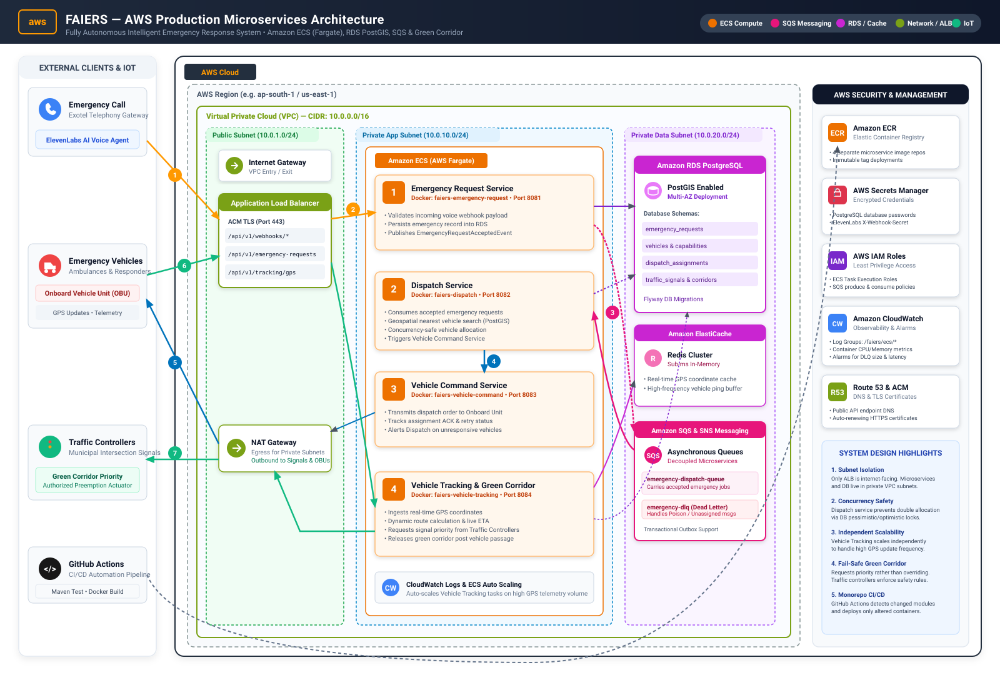

Fully Autonomous Intelligent Emergency Response System — Cloud Microservices & Green Corridor

Emergency caller connects through Exotel. ElevenLabs voice agent collects patient details and initiates an authenticated HTTP POST webhook through AWS ALB to the Emergency Request Service.
Emergency Request Service validates, stores the request in RDS PostgreSQL, and sends an EmergencyRequestAcceptedEvent to Amazon SQS. Dispatch Service safely consumes jobs without duplicate allocations.
Dispatch Service selects nearest ambulance via PostGIS geospatial query. Vehicle Command Service transmits dispatch orders via NAT Gateway to the Onboard Unit and awaits explicit vehicle ACK.
Ambulance streams live GPS coords through ALB to Vehicle Tracking Service. Real-time locations are buffered in ElastiCache Redis, ETA recalculated, and signal priority preemption requested from municipal traffic controllers.